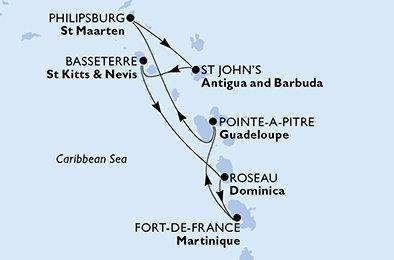

Votre itinéraire

Vue d'ensemble du voyage
MSC World Europa 5★ Plus · Vols réguliers directs · Pension complète
- Vol aller : Paris → Fort-de-France (Martinique)
- 7 nuits à bord en formule Easy All Inclusive « Tout à Volonté »
- Escales : Pointe-à-Pitre · Journée en mer · Philipsburg · St John's · Basseterre · Roseau · Fort-de-France
- Vol retour : Fort-de-France → Paris, arrivée le 21 mars au matin
inclus : vols et taxes, transferts, taxes portuaires, frais de séjour, forfait boissons illimité, animations à bord et assurances (assistance, rapatriement, annulation, bagages, Covid).